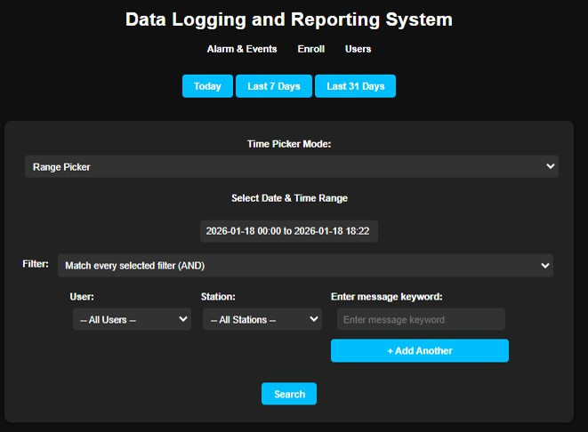
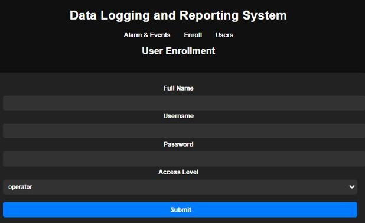
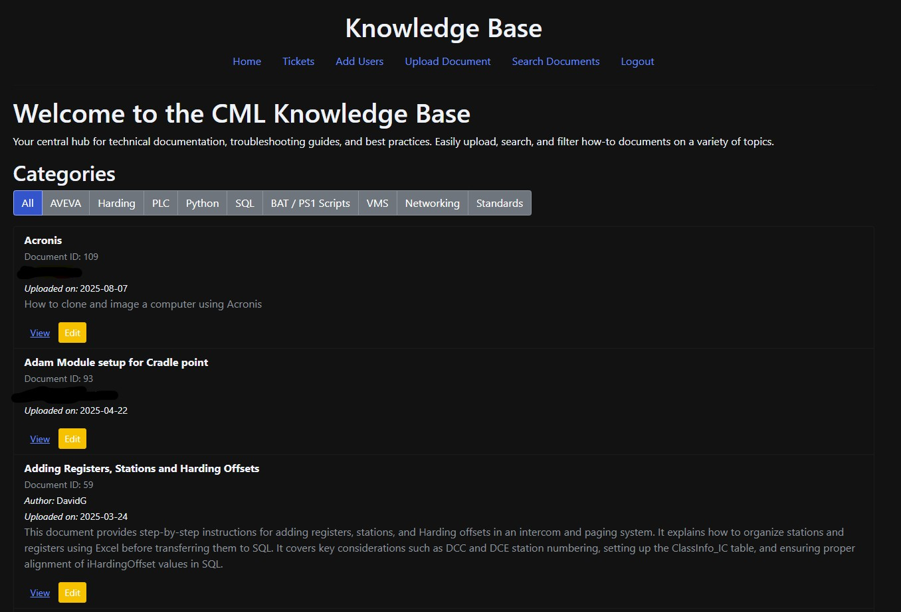
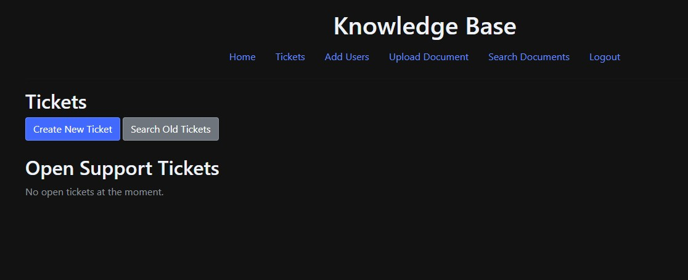

This page highlights websites I’ve built — from small business sites designed around each customer’s style, to internal applications that help my team work faster and stay organized. I’ve created projects using Ruby on Rails and Python Flask, and I’ve also worked with tools like WordPress and GoDaddy for quick deployments.
My web journey
I enjoy building websites that are clean, practical, and easy for people to use. These examples show my range—from public-facing business websites to internal tools that connect to databases and support real workflows.

Personal Portfolio (This Website)
This portfolio was the first website I published online. It started with the Forty template from HTML5 UP, and I customized the layout, content, and navigation to fit my goals.

Kings Interiors Drywall
A website built for a small remodeling business. The design and content were created around what the customer wanted to highlight—services, photos, and a simple contact flow.

Front Range Landscape Pros
A small business site built to show services and help customers quickly understand offers and request a quote.
DLRS (Internal Web Tool)
DLRS is an internal website designed to read from a database and display records in a clean interface. It supports data entry, filtering/searching, and user management (creating users and controlling access).
Screenshots:


Note: These screenshots are from an internal tool used for operational workflows.
Knowledge Base (Internal Web Tool)
The Knowledge Base is an internal web application I built to help organize project documentation, reduce time spent searching for files, and improve team workflows. It supports uploading documents (PDF, SQL, and Python files), extracting metadata, and storing records in a database so users can quickly find what they need.
Key features:
- Document uploads with metadata extraction (title, author, and descriptions)
- Search and filtering to quickly locate files
- Built-in viewing experience for PDFs and file previews
- User login + access control for internal use
- Ticket-style tracking to log tasks and workflow requests
Screenshots:


Tech used: Python Flask, SQL Server, HTML/CSS, authentication, and database-driven UI components.